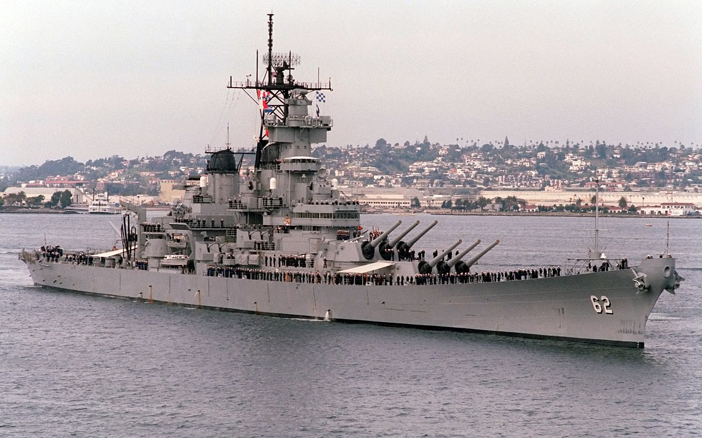

Battleship (also known as Battleships) is a strategy type guessing game for two players. It is played on ruled grids (paper or board) on which each player's fleet of warships are marked. The locations of the fleets are concealed from the other player. Players alternate turns calling "shots" at the other player's ships, and the objective of the game is to destroy the opposing player's fleet.
The game is played on four grids, two for each player. The grids are typically square, usually 10×10, and the individual squares in the grid are identified by letter and number. On one grid the player arranges ships and records the shots by the opponent. On the other grid, the player records their own shots.
Before play begins, each player secretly arranges their ships on their primary grid. Each ship occupies a number of consecutive squares on the grid, arranged either horizontally or vertically. The number of squares for each ship is determined by the type of ship. The ships cannot overlap (i.e., only one ship can occupy any given square in the grid) or be placed diagonally. The types and numbers of ships allowed are the same for each player. These may vary depending on the rules. The ships should be hidden from the opposing player's sight and players are not allowed to see each other's pieces. The game is a discovery game in which players need to discover their opponent's ship positions.
